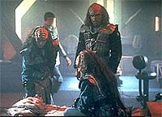
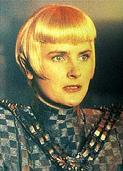
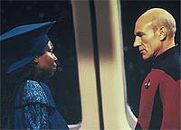
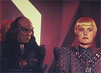
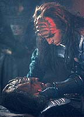

|
MANCHETE
DO EPISDIO
Concluso
de guerra Klingon distribui
brilhantismo entre os personagens
Episdio
anterior | Prximo
episdio
Sinopse:
Data Estelar: 45020.4.
No fim do ano passado, Worf abandonou a Frota Estelar para se juntar
ao exrcito do novo chanceler do Imprio Klingon, Gowron. Faces
que no aceitaram a vitria de Gowron no Alto Conselho iniciaram
uma guerra civil, sob o comando das irms Duras. Apesar de entender
a posio de Worf, Picard se recusa a envolver a Enterprise
diretamente em um conflito interno Klingon.
Por outro lado, o capito decide interceder junto Frota Estelar
para montar um bloqueio na fronteira do Imprio Klingon com o Imprio
Romulano, a fim de evitar que os Romulanos interferissem na guerra
civil, ajudando os exrcitos das irms Duras a sobrepujar Gowron.
 Aps
convencer a Federao de sua proposta, Picard monta uma frota de
40 naves para colocar em prtica o bloqueio. Alguns de seus
oficiais seniores foram designados para outras naves. Riker e Geordi
foram assumir o comando da USS Excalibur. Data recebeu o comando da
USS Sutherland.
Durante os conflitos em na capital Klingon, Worf sequestrado por
guerreiros sob o comando de Lursa e B'Etor. Enquanto isso, as duas
irms continuam a tratar da guerra com uma comandante Romulana
chamada Sela, que guarda grande semelhana com a falecida oficial
da Frota Estelar Tasha Yar. Ela est discutindo com os Klingons
rebeldes como pretendem tomar o controle do Imprio quando
informada da interveno da Federao, ao enviar sua frota de
naves para a fronteira.
 Na
esperana de convencer Picard a desistir do bloqueio, Sela faz uma
visita surpresa ao capito. Picard fica intrigado quando a Romulana
diz ser a filha de Tasha Yar, mas Guinan mais tarde o convence de
que Sela fala a verdade. A El-Auriana insiste em dizer que de algum
modo se lembra de Picard enviando Tasha para uma Enterprise de outra
poca (a NCC 1701-C), 23 anos no passado. Por causa disso, Guinan
afirma, Picard responsvel direto pelo nascimento de Sela.
Picard pede um encontro com a Romulana, que o pressiona para saber a
estratgia da Frota Estelar e d a ele 14 horas para recuar ou ser
atacado por foras Romulanas. O capito no revela nada e procura
descobrir mais sobre o passado de Sela. Quando a Romulana confirma a
histria de Guinan, Picard percebe que ela realmente a filha de
Tasha Yar. Enquanto isso, Worf levado s irms Duras, que
tentam convenc-lo a juntar-se a elas, casando-se com B'Etor. O
Klingon recusa.
Com o prazo dado por Sela se esgotando, Picard decide que o nico
modo de evitar uma guerra com os Romulanos expor seu envolvimento
na guerra civil Klingon. Ele convence Gowron a lanar um ataque
macio contra as foras da famlia Duras, para que os rebeldes
requisitassem a ajuda Romulana.
Ao serem detectados entrando no espao Klingon, graas
eficiente atuao do comandante Data a bordo da Sutherland, os
Romulanos desistem de apoiar Lursa e B'Etor, que eventualmente
acabam derrotadas. Gowron finalmente estabelecido como o lder
do Alto Conselho, e Worf decide retornar Frota, servindo a bordo
da Enterprise.
Comentrios:
Se a primeira
parte de "Redemption" foi totalmente voltada para
Worf, sua continuao ofereceu tarefas interessantes para vrios
personagens. Picard, em seu confronto com Sela, Data, em sua disputa
com o tenente-comandante Hobson para se provar um oficial apto a
comandar, e, claro, Worf, descobrindo que ser Klingon no apenas
ter rugas na testa, so os maiores beneficiados.
 Obviamente,
a diluio da ateno dada a cada personagem diminui um pouco a
anlise psicolgica que se faz de cada um deles, resultando um
episdio menos intenso que sua primeira parte. Por outro lado, o
roteiro extremamente desenvolto de Ronald Moore consegue suprir
quase que totalmente essa deficincia. O episdio no perde o
ritmo por um instante sequer --no h realmente tempo para ir
buscar alguma coisa na geladeira entre uma cena e outra--,
fornecendo uma histria pica nos 45 minutos disponveis.
Uma forma mais estatstica de aferir a complexidade da trama ver
a quantidade de personagens neste episdio --e no se trata de uma
poro de figurantes. H muita gente importante para a histria:
Toral, Lursa, B'Etor, Kurn, Gowron, Sela, Hobson e Guinan so s
os exemplos mais proeminentes. De qualquer modo, um esforo
digno dos grandes escritores manter toda essa gente ocupada em menos
de uma hora.
Alm disso, a histria consegue provar mais uma coisa: histrias
de viagem no tempo no necessariamente exigem um boto "reset"
ao final! Desenvolvendo as consequncias do episdio "Yesterday's
Enterprise", da terceira temporada, Ron Moore consegue, com
brilhantismo, empacotar uma subtrama complexa e que, ainda assim,
pode ser entendida por quem no tinha testemunhado, dois anos atrs,
a ida de Tasha Enterprise-C. Esta a maior prova de que a
continuidade no necessariamente uma pedra no sapato dos
roteiristas. Quando respeitada e bem utilizada, pode se tornar uma
fonte inesgotvel de desenvolvimentos para a srie.
 Se
a insero de Sela no universo de Jornada foi primorosa,
sua interpretao j no foi altura. Aptica como sempre,
Denise Crosby no consegue imprimir ao personagem todo o potencial
que existe nele. Que tipo de conflito interno existe na comandante
que, quando criana, foi responsvel direta pela morte de sua me?
Nunca saberemos. O que vemos um maniquesmo exagerado.
Seria muito mais interessante se tivssemos a chance de ver uma
Sela mais dividida entre a sua lealdade para os Romulanos e uma
curiosidade para saber como era sua me. E olha que Picard deu
todas as chances, durante sua reunio com Sela, para que Denise
Crosby imprimisse em sua atuao alguma sutil dualidade a respeito
da humanidade. Faltou atriz altura da tarefa.
Esse problema no est limitado a "Redemption".
Infelizmente, esses ngulos mais complexos de Sela nunca foram
abordados, mantendo um padro totalmente raso para as motivaes
da personagem. Ela voltaria ainda em "Unification",
tambm do quinto ano, mas com exatamente o mesmo estilo. Se Sela no
tivesse sido inserida em episdios to memorveis, provavelmente
nem seria lembrada com estima pelos fs.
As sequncias de Data a bordo da Sutherland compem a sequncia
mais divertida do episdio. Cenas de dilogo afiado, como a do
"pedido negado", ou a em que o andride recrimina as
atitudes de seu primeiro-oficial para depois orden-lo a fazer as
mesmas coisas, ou a clssica sequncia em que Data expe os
Romulanos, seguida pelo reconhecimento de Hobson, ao cham-lo
enfaticamente de "capito", fornecem combustvel para
manter a audincia ainda mais vontade com a
"humanidade" de Data.
 A
jornada tambm muito produtiva para Worf. Coloc-lo no seio da
cultura Klingon foi um modo extremamente eficiente de mostrar o
impacto que os humanos tiveram sobre ele. Em "The Enemy",
do terceiro ano, Worf d um grande passo, ao mostrar audincia
que ele no est limitado pelos valores humanos. Aqui, ele mostra
que tambm no est totalmente comprometido com o modo de vida
Klingon, apesar da profunda admirao por sua herana.
A soma desses dois episdios faz com que Worf rompa de vez a
barreira dos personagens rasos e se transforme em um personagem
complexo, capaz de comportamentos menos previsveis. A representao
visual disso, na cena em que ele se recusa a matar Toral e pede a
Picard para voltar a servir na Enterprise, extremamente
eficiente, lembrando muito o final de "Sins of the Father",
tambm do terceiro ano.
A direo de David Carson est altura do brilhante roteiro de
Moore. Os efeitos especiais tambm do sua contribuio: a
primeira vez que vemos uma frota de naves da Federao a caminho
de uma misso (j havamos visto uma frota de naves, em
frangalhos, aps a batalha de Wolf 359, em "The
Best of Both Worlds, Part II"). A cena uma pequena
prvia do que veramos sistematicamente em Deep Space Nine
a partir do terceiro ano --frotas inteiras com centenas de naves em
confronto direto!
O episdio tambm no deve nada aos demais episdios com temtica
Klingon em termos visuais. Os incrveis cenrios e as bonitas
pinturas do planeta capital do Imprio esto l. Uma recriminao
fica apenas para os cenrios do interior das naves Romulanas.
impresso minha ou os cenrios Romulanos so sempre improvisos
sem graa com base em rearranjo de outros cenrios?
Citaes:
Hobson - "By the
same token, I don't think an android is a good choice for a captain."
("Pelo mesmo princpio, no acho que um andride seja uma
boa escolha para ser capito.")
Data - "I understand your concerns. Request denied."
("Entendo suas preocupaes. Pedido negado.")
Kurn - "It's the Klingon way!"
(" o modo Klingon!")
Worf - "I know. But it is not my way."
("Eu sei. Mas no o meu modo.")
Trivia:
 Segundo Michael Piller, a histria
de "Redemption" seria usada como o episdio final
da terceira temporada, porm a idia do episdio "The
Best of Both Worlds" fez com que os Klingons fossem
atrasados em um ano.
Segundo Michael Piller, a histria
de "Redemption" seria usada como o episdio final
da terceira temporada, porm a idia do episdio "The
Best of Both Worlds" fez com que os Klingons fossem
atrasados em um ano.
O diretor deste episdio foi
David Carson, mais conhecido como o diretor de "Jornada nas
Estrelas - Generations". Alm de "Redemption",
Carson dirigiu quatro episdios da Nova Gerao, entre
eles o clssico "Yesterday's Enterprise", que tambm
conta com a participao de Denise Crosby.
A nave que Data comanda neste
episdio a USS Sutherland, registro nmero NCC 72015, da classe
Nebula. A primeira apario de uma nave desta classe ocorreu no
episdio "The Wounded". A
nave de Riker neste episdio a USS Excalibur, da classe
Ambassador, a mesma da Enterprise-C.
Aps "Redemption",
Gowron voltar no episdio "Rightful Heir", da
sexta temporada. Kurn voltaria apenas em Deep Space Nine.
Ficha
tcnica:
Escrito por Ronald D. Moore
Direo de David Carson
Exibido em 23/09/1991
Produo: 101
Elenco:
Patrick Stewart como
Jean-Luc Picard
Jonathan Frakes como William Thomas Riker
Brent Spiner como Data
LeVar Burton como Geordi La Forge
Michael Dorn como Worf
Gates McFadden como Beverly Crusher
Marina Sirtis como Deanna Troi
Elenco convidado:
Nicholas Kepros
como general Movar
J.D. Cullum como Toral
Denise Crosby como Sela
Michael G. Hagerty como capito Larg
Tony Todd como Kurn
Robert O'Reilly como Gowron
Colm Meaney como tenente Miles Edward O'Brien
Fran Bennett como almirante Shanthi
Timothy Carhart como tenente-comandante Christopher Hobson
Jordan Lund como Kulge
Stephen James Carver como navegador da Hegh'ta
Clifton Jones como alferes Craig
Barbara March como Lursa
Gwynyth Walsh como B'Etor
Whoopi Goldberg como Guinan
Episdio
anterior | Prximo
episdio
|